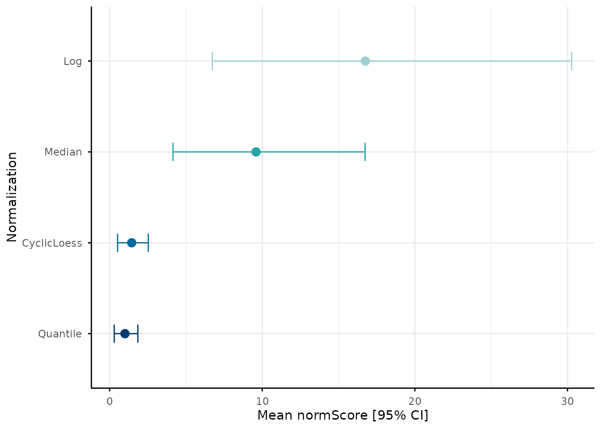
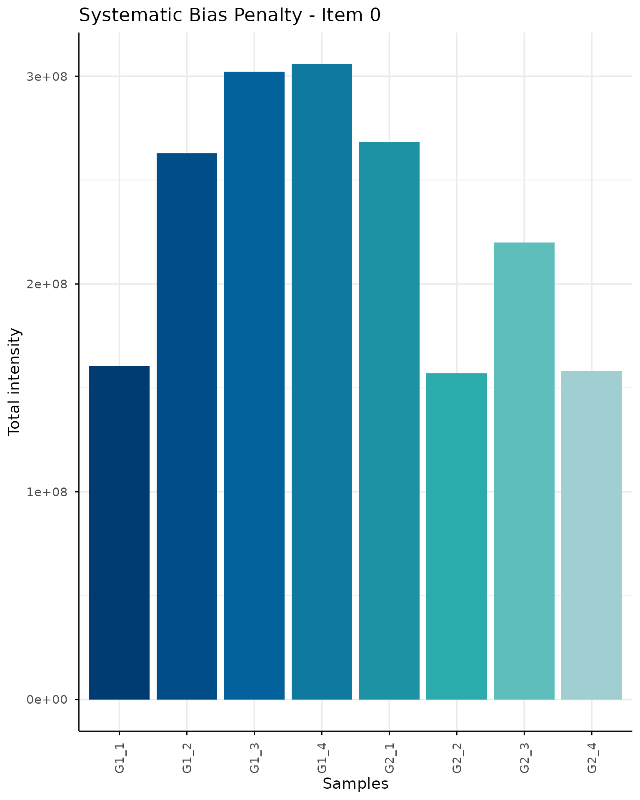
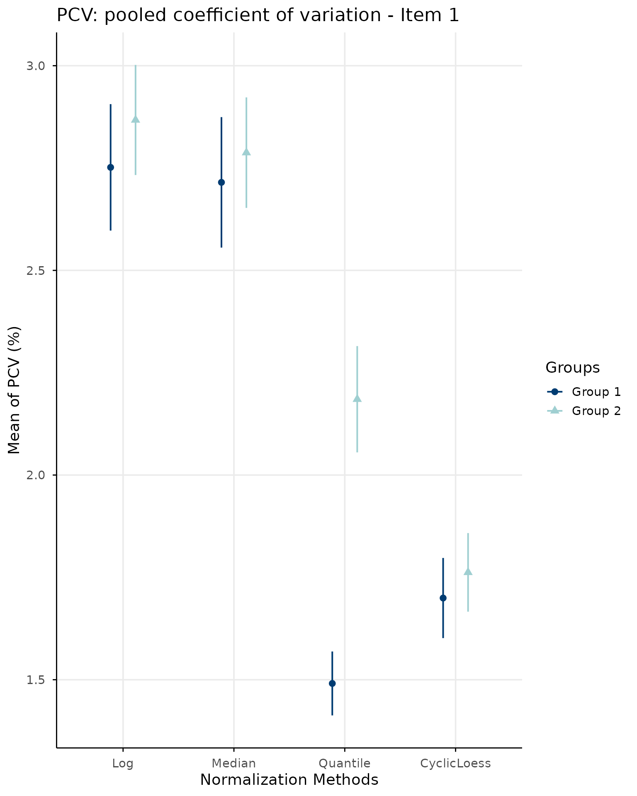
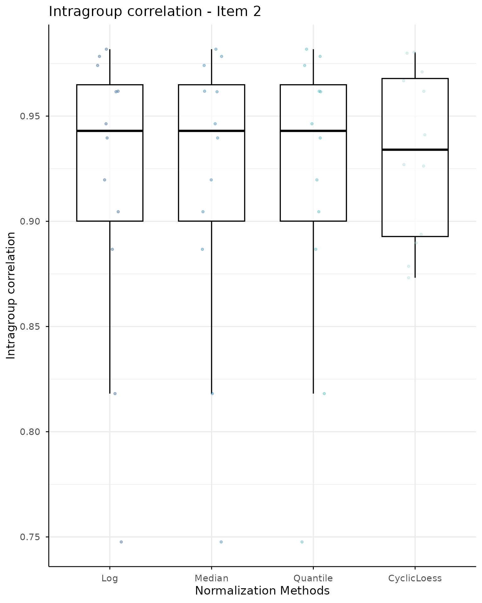
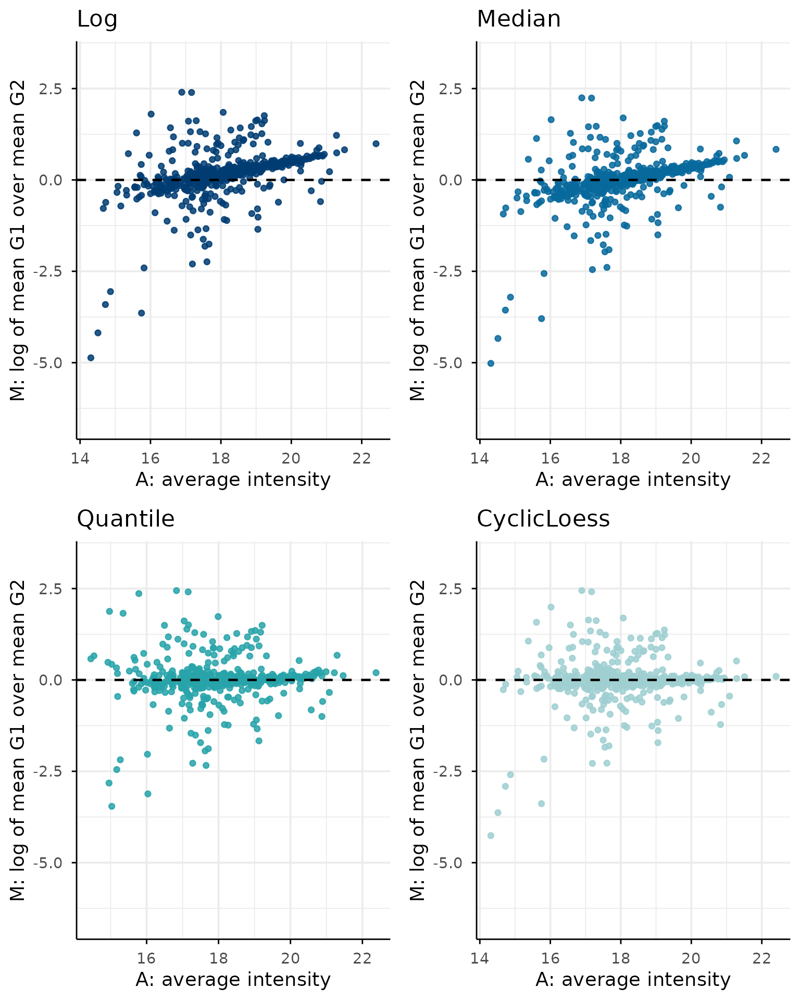
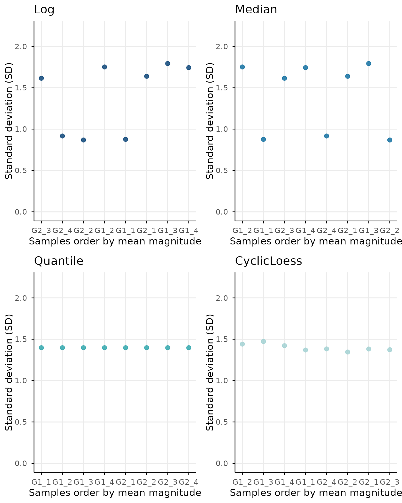
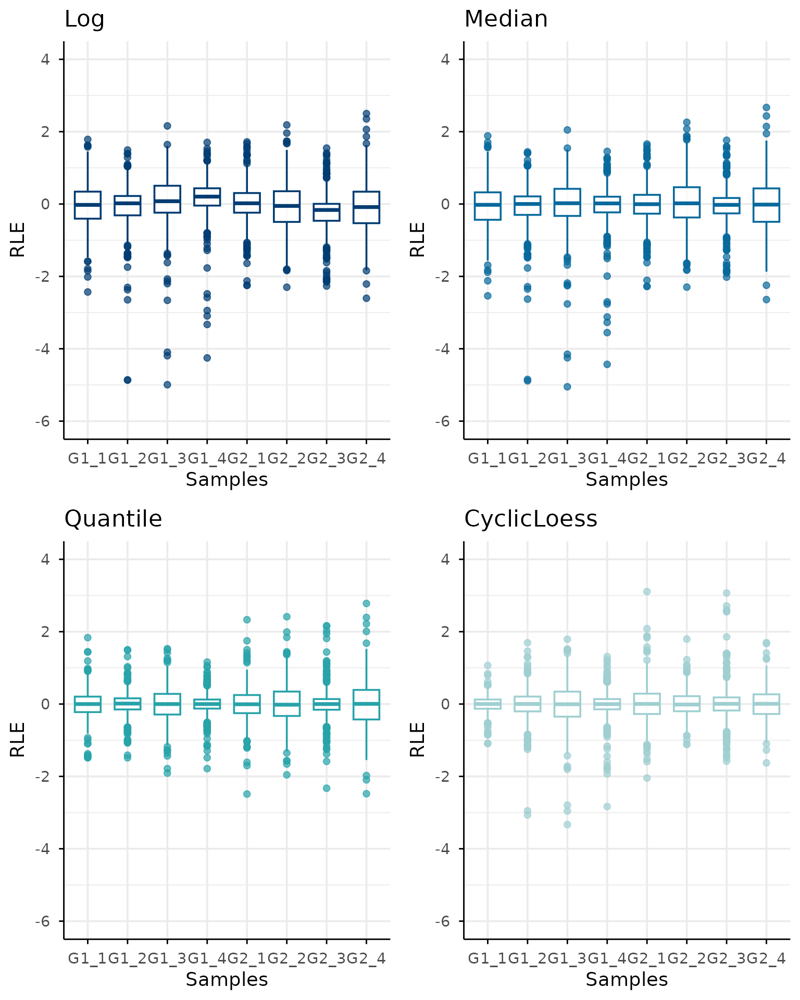
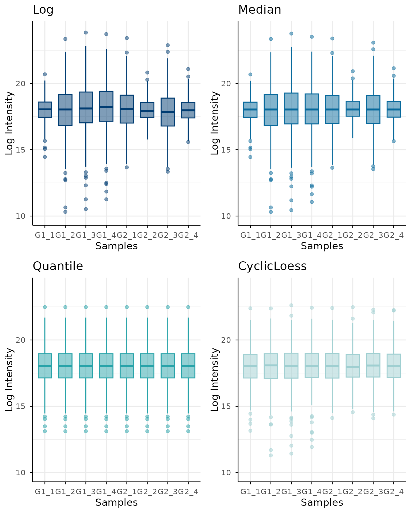

Getting started with normScore
normScore-intro.RmdOverview
normScore provides tools to evaluate and rank
normalization methods for omics data using a composite multi-metric
scoring framework.
The package is designed to help compare different normalization strategies based on several complementary criteria, including variability, correlation structure, MA-trend behavior, relative log expression consistency, and sample-level intensity consistency.
In this vignette, we show a minimal workflow using simulated data.
Simulating example data
To keep the package lightweight and reproducible,
normScore includes a data simulation function that
generates proteomics-like two-group datasets.
library(normScore)
simData <- simulateData(
nProteins = 500,
nPerGroup = 4,
sampleShiftSd = 0.12,
sampleShiftCap = 1,
sampleSdStrength = 1.2,
sampleSdRho = 0.3,
rhoWithin = 0.6,
rhoBetween = 0.3,
loadingSd = 0.45,
sigmaHi = 0.03,
sigmaLo = 0.4,
gammaSigma = 3.8,
kMnar = 1.6,
addMissing = FALSE,
seed = 123
)The simulated object contains three main elements:
names(simData)
#> [1] "logData" "rawData" "metadata"-
logData: simulated data on the log2 scale -
rawData: simulated data on the raw scale -
metadata: sample annotation with group membership
We can inspect the sample metadata:
head(simData$metadata)
#> Samples Groups
#> 1 G1_1 G1
#> 2 G1_2 G1
#> 3 G1_3 G1
#> 4 G1_4 G1
#> 5 G2_1 G2
#> 6 G2_2 G2Building a list of normalized datasets
The main function of the package, normScore(), expects a
named list of normalized datasets. Each element of the list should be a
matrix or data frame with the same rows (features) and columns
(samples).
For illustration purposes, we create a few simple variants of the simulated log-scale data. In a real analysis, these would correspond to different normalization methods.
# Median normalization
MedianMat <- NormalyzerDE::medianNormalization(simData$rawData)
colnames(MedianMat) <- colnames(simData$rawData)
rownames(MedianMat) <- rownames(simData$rawData)
# Quantile normalization
QuantileMat <- limma::normalizeQuantiles(
simData$logData
)
colnames(QuantileMat) <- colnames(simData$logData)
rownames(QuantileMat) <- rownames(simData$logData)
# CyclicLoess normalization
CyclicNorm <- limma::normalizeCyclicLoess(
simData$logData, method="fast", adaptive.span=FALSE
)
# All together
normalizedDataList <- list(
Log = simData$logData,
Median = MedianMat,
Quantile = QuantileMat,
CyclicLoess = CyclicNorm
)
names(normalizedDataList)
#> [1] "Log" "Median" "Quantile" "CyclicLoess"Running normScore()
We now compute the normalization ranking.
result <- normScore(
normalizedDataList = normalizedDataList,
groupData = simData$metadata,
rawData = simData$rawData,
returnDetails = TRUE,
nBoot = 150
)
#> Reference group set to G2.
#> Alternative group set to G1.Final ranking
The finalRanking element contains the final composite
score for each normalization method.
result$finalRanking
#> Quantile CyclicLoess Median Log
#> 0.3472501 0.4976523 3.3361530 5.6062588Lower values indicate better normalization performance according to the scoring framework implemented in the package.
Detailed scores
The detailRanking element contains the scaled item-wise
scores used to build the final ranking.
result$detailRanking
#> Item1 Item2 Item3 Item4 Item5 Item6 Total
#> Quantile 0.09933769 0.0 0.00000000 0.0000000 0.2479124 0.0000000 0.3472501
#> CyclicLoess 0.00000000 0.1 0.08737989 0.1708294 0.0000000 0.1394430 0.4976523
#> Median 0.94601993 0.0 0.95378106 0.3503664 0.3663703 0.7196153 3.3361530
#> Log 1.00000000 0.0 1.00000000 1.0000000 1.0000000 1.0000000 5.0000000
#> TotalxItem0
#> Quantile 0.3472501
#> CyclicLoess 0.4976523
#> Median 3.3361530
#> Log 5.6062588The six item scores correspond to:
- pooled coefficient of variation
- within-group sample correlation
- MA-plot trend deviation
- mean-SD trend deviation
- RLE consistency
- total intensity consistency
These are scaled and combined into a final score.
Bootstrap summary
If returnDetails = TRUE, the function also computes
bootstrap-based summary scores and confidence intervals.
result$bootstrapScore
#> normalization meanNormScore ll95 ul95
#> 1 Quantile 1.001082 0.2980131 1.845679
#> 2 CyclicLoess 1.442139 0.5182585 2.531123
#> 3 Median 9.593603 4.1514350 16.738587
#> 4 Log 16.753519 6.7275106 30.269639This output contains:
- the normalization method name
- the mean bootstrap normScore
- the lower 95% confidence bound
- the upper 95% confidence bound
Bootstrap plot
The bootstrap summary can also be visualized directly:
plotBootstrapNormScore(result)
Diagnostic plots
Individual diagnostic plots from state-of-art normalization criteria can be visualed with the following function:







Notes on the scoring framework
The normScore() function combines multiple complementary
criteria into a single ranking. This is useful because no single metric
fully captures normalization quality.
Some items emphasize within-group consistency, whereas others evaluate distributional behavior or trend distortions introduced by normalization.
The resulting score should therefore be interpreted as a comparative measure across candidate normalization methods rather than as an absolute quality index.
Important considerations
Before running normScore, verify that:
- all assays contain the same rows and columns;
- feature and sample names are unique;
- the order of
groupData$Samplesmatches the assay columns; - missing values are represented consistently across assays;
- every sample has a valid group assignment.
Session information
sessionInfo()
#> R version 4.6.1 (2026-06-24)
#> Platform: x86_64-pc-linux-gnu
#> Running under: Ubuntu 24.04.4 LTS
#>
#> Matrix products: default
#> BLAS: /usr/lib/x86_64-linux-gnu/openblas-pthread/libblas.so.3
#> LAPACK: /usr/lib/x86_64-linux-gnu/openblas-pthread/libopenblasp-r0.3.26.so; LAPACK version 3.12.0
#>
#> locale:
#> [1] LC_CTYPE=C.UTF-8 LC_NUMERIC=C LC_TIME=C.UTF-8
#> [4] LC_COLLATE=C.UTF-8 LC_MONETARY=C.UTF-8 LC_MESSAGES=C.UTF-8
#> [7] LC_PAPER=C.UTF-8 LC_NAME=C LC_ADDRESS=C
#> [10] LC_TELEPHONE=C LC_MEASUREMENT=C.UTF-8 LC_IDENTIFICATION=C
#>
#> time zone: UTC
#> tzcode source: system (glibc)
#>
#> attached base packages:
#> [1] stats graphics grDevices utils datasets methods base
#>
#> other attached packages:
#> [1] normScore_0.99.0
#>
#> loaded via a namespace (and not attached):
#> [1] SummarizedExperiment_1.42.0 gtable_0.3.6
#> [3] xfun_0.60 bslib_0.11.0
#> [5] ggplot2_4.0.3 rstatix_1.1.0
#> [7] Biobase_2.72.0 lattice_0.22-9
#> [9] vctrs_0.7.3 tools_4.6.1
#> [11] generics_0.1.4 stats4_4.6.1
#> [13] tibble_3.3.1 pkgconfig_2.0.3
#> [15] Matrix_1.7-5 RColorBrewer_1.1-3
#> [17] S7_0.2.2 desc_1.4.3
#> [19] S4Vectors_0.50.1 lifecycle_1.0.5
#> [21] compiler_4.6.1 farver_2.1.2
#> [23] textshaping_1.0.5 statmod_1.5.2
#> [25] Seqinfo_1.2.0 carData_3.0-6
#> [27] htmltools_0.5.9 sass_0.4.10
#> [29] yaml_2.3.12 Formula_1.2-5
#> [31] preprocessCore_1.74.0 car_3.1-5
#> [33] tidyr_1.3.2 pkgdown_2.2.1
#> [35] pillar_1.11.1 ggpubr_1.0.0
#> [37] jquerylib_0.1.4 MASS_7.3-65
#> [39] DelayedArray_0.38.2 cachem_1.1.0
#> [41] limma_3.68.4 boot_1.3-32
#> [43] abind_1.4-8 NormalyzerDE_1.30.0
#> [45] tidyselect_1.2.1 digest_0.6.39
#> [47] dplyr_1.2.1 purrr_1.2.2
#> [49] labeling_0.4.3 cowplot_1.2.0
#> [51] fastmap_1.2.0 grid_4.6.1
#> [53] cli_3.6.6 SparseArray_1.12.2
#> [55] magrittr_2.0.5 S4Arrays_1.12.0
#> [57] broom_1.0.13 withr_3.0.3
#> [59] backports_1.5.1 scales_1.4.0
#> [61] rmarkdown_2.31 XVector_0.52.0
#> [63] matrixStats_1.5.0 otel_0.2.0
#> [65] ggsignif_0.6.4 ragg_1.5.2
#> [67] evaluate_1.0.5 knitr_1.51
#> [69] GenomicRanges_1.64.0 IRanges_2.46.0
#> [71] rlang_1.3.0 glue_1.8.1
#> [73] BiocGenerics_0.58.1 jsonlite_2.0.0
#> [75] R6_2.6.1 MatrixGenerics_1.24.0
#> [77] systemfonts_1.3.2 fs_2.1.0